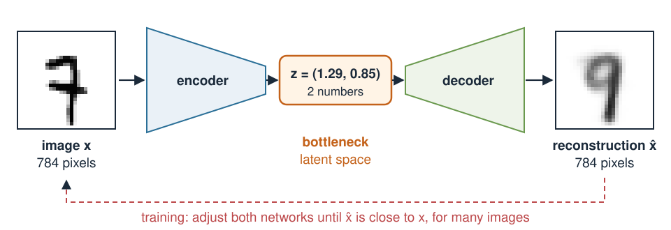
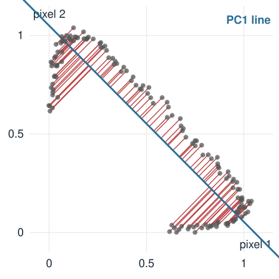
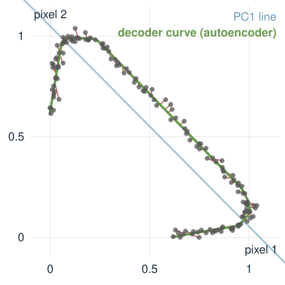

From PCA to autoencoders
About this lecture
Can we describe an image with a few numbers, and rebuild it from them?
- An image is a point in a space with one axis per pixel. Images of one kind fill only a thin part of it.
- PCA (unit Principal component analysis) finds the best flat summary. Seen again here: PCA is an autoencoder, an encoder (image → few numbers) and a decoder (few numbers → image).
- Replace both straight maps by neural networks (unit Neural networks): an autoencoder that can follow curved families of images.
Slides titled The math give the formulas and proofs; the ideas are complete without them.
An image is a point
A 28 \times 28 image is a vector of 784 grey values: one point in \mathbb R^{784}.
- Almost every point of that space looks like noise. Handwritten digits, or masks of cells, fill a tiny, connected region of it.
- Moving along that region changes the image smoothly: a little thicker, a little more tilted, a little longer.
- So a few numbers should be enough to say where in the region an image is.
Today, start with images of two pixels: a point in the plane, which we can draw.
Recall: PCA and neural networks

PCA (unit Principal component analysis): two neighbouring pixels form a cloud along the diagonal. PC1 (blue), the direction of largest spread, is an eigenvector of the covariance matrix S. Keep the score along it; rebuild by going back along the line. Lost (red): the spread along the dropped directions, the sum of their eigenvalues.
Neural networks (unit Neural networks): a layer is a matrix, then a bend (ReLU); without the bend, layers collapse to one matrix. Training walks downhill on an error.
PCA is a linear autoencoder, by hand
Two pixels, mean subtracted. PC1 is the unit vector \mathbf u = (0.8,\ 0.6). Image \mathbf x = (3,\ 1).
- Encode (image → one number): the score s = \mathbf u \cdot \mathbf x = 0.8 \cdot 3 + 0.6 \cdot 1 = 3.0.
- Decode (number → image): \hat{\mathbf x} = s\,\mathbf u = 3.0 \cdot (0.8,\ 0.6) = (2.4,\ 1.8).
- Error: \mathbf x - \hat{\mathbf x} = (0.6,\ -0.8), squared length 1.0.
With the mean added back: \text{encode}(\mathbf x) = \mathbf u^\top(\mathbf x - \bar{\mathbf x}), \ \text{decode}(s) = \bar{\mathbf x} + s\,\mathbf u.
With k components: k scores, and \hat{\mathbf x} = \bar{\mathbf x} + s_1\mathbf u_1 + \dots + s_k\mathbf u_k.
The math: no linear autoencoder beats PCA
The PCA unit showed that, for one unit direction \mathbf u, the mean squared reconstruction error of centred data is \operatorname{tr}S - \mathbf u^\top S\mathbf u, smallest at the top eigenvector, and that with k components the error is the sum of the dropped eigenvalues.
- An autoencoder with a linear encoder E (k \times d) and a linear decoder D (d \times k), plus shifts, rebuilds every image inside the k-dimensional flat subspace spanned by the columns of D.
- The best flat k-dimensional fit in squared error is the span of the first k PCs (Eckart–Young). So a trained linear autoencoder can do no better than PCA, and the best ones span the same subspace (Baldi & Hornik 1989), though not necessarily with orthogonal columns.
The bottleneck must be narrow

- Encoder: image → a few numbers z. Decoder: z → image. Train both so that \hat{\mathbf x} \approx \mathbf x for many images.
- With as many numbers as pixels, the “autoencoder” just copies (PCA with all components: rotate, rotate back). It learns nothing.
- A narrow bottleneck forces z to keep what varies most between images.
When the images lie on a curve

A bright spot moves past two pixels. One true number (its position), but the images lie on a curve.
- PC1 is the best straight line, yet the spot at position -0.5 and the spot at 0.2 (noise-free scores 0.42 and 0.46) get almost the same score: the line folds the curve.
- PCA needs two numbers to rebuild these images well.
An autoencoder follows the curve

Replace both straight maps by small neural networks (unit Neural networks):
\text{encoder: } 2 \to 16 \to 1, \qquad \text{decoder: } 1 \to 16 \to 2 \quad (\text{ReLU}).
- Still one number per image, but the decoder draws a curve (green) instead of a line.
- Error after 1500 training steps: 0.0006, against 0.0170 for PCA.
- Without the bends, this network would be a linear autoencoder: PCA again.
Try it: one number per image
From autoencoders to generating images
An autoencoder gives every image a place z in a small latent space, and a decoder that turns any z into an image.
- Could we pick a new z and decode it, to make a new image?
- A plain autoencoder only learns to rebuild its training images. Nothing says what lies between them in z, or where in z the images are.
- The variational autoencoder (next unit) fixes this.
Summary
| Idea | In one line |
|---|---|
| Image as a point | one axis per pixel; images of one kind fill a thin region |
| Encoder / decoder | image → few numbers z → image |
| PCA | the best linear autoencoder: encode = project, decode = mean + scores × eigen-images |
| Error of PCA | the spread of the images in the directions that were dropped |
| Bottleneck | must be narrow, or the network just copies |
| Autoencoder | encoder and decoder are networks: the decoder can follow a curve |